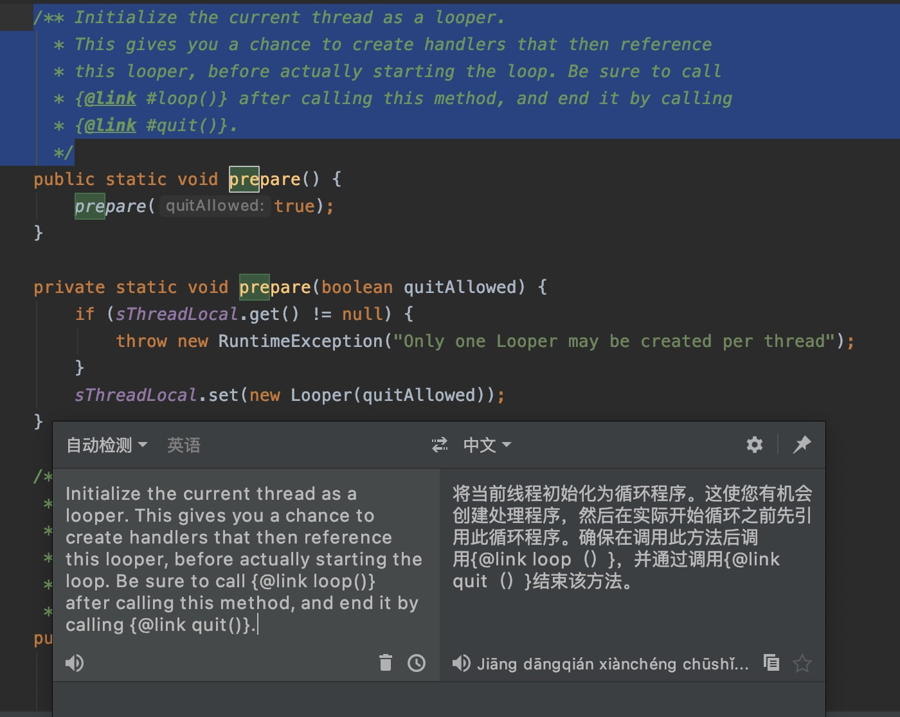
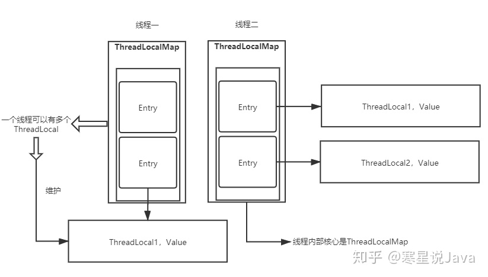

| Class | Name | DES | MORE |
|---|---|---|---|
| Message | 消息 | 使用了享元设计模式 链表的数据结构 | 详情 |
| MessageQuene | 消息队列 | 单链表的数据结构 | 优先级的队列 — 根据时间先后顺序排队的单链表 |
| Handler | message的处理者 | 即线程间传递的对象，传递的信息包含在其中 Handler的构造函 ，在构造函数中初始化了一个Looper 和 MessageQueue。 | |
| ThreadLocal | 数据结构是键值对 | 只有在指定的线程可以获取到存储的数据 | 获取线程唯一的变量 Theadlocal value 线程内部的数据存储类,使用场景：当某些数据是以线程为作用域，并且不同线程具有不同的数据副本 |
| Looper | 循环器 |  | 类Looper的prepare的函数,即是对Looper进行了初始化，将Looper对象引用保存在sThreadLocal中，先保证了Looper和Threadlocal-1V1关系,由于sThreadLocal获取的值是通过获取当前线程获取线程唯一的变量,这样就保证了一个线程只有一个looper |
参考文献
技术小黑屋
简书-InheritableThreadLocal
引言
1 | 事物的创造从未有应该或不应该，但被创造出来后如何被人利用却成了最大的问题。 |
我觉得这个话应用到编程上也是一样的，把自身关注点放到事物是什么背景下创造出来的，了解事物的出生，发展，迭代，衰亡，站在巨人的肩膀上看问题。
深刻理解事物的本质和特性，这也是导致变化的原因，本质影响结果的走向，特性影响过程的变化。
无法对现象作出最终解释的理论都是无用的，因为其不能反映客观事实！
ThreadLocal 简述
ThreadLocal是一个本地线程副本变量工具类，主要用于将私有线程和该线程存放的副本对象做一个映射，各个线程之间的变量互不干扰。
ThreadLocal就是提供给每个线程操作变量的工具类，做到了线程之间的变量隔离目的。
TheadLocal 原理及应用场景
- ThreadLocal主要有2大特性
- 全局性 线程内可访问
- 唯一性 使用ThreadLocal维护变量时，每个线程都会获得该线程独享一份变量副本。
这里借鉴下大神的图

1.每个Thread线程内部都有一个ThreadLocalMap。
2.Map里面存储线程本地对象ThreadLocal（key）和线程的变量副本（value）。
3.Thread内部的Map是由ThreadLocal维护，ThreadLocal负责向map获取和设置线程的变量值。
4.一个Thread可以有多个ThreadLocal。
Thread
当我们初始化一个线程的时候,其内部干去创建了一个ThreadLocalMap的Map容器待用
1 | class Thread implements Runnable { |
ThreadLocal
1 | Sets the current thread's copy of this thread-local variable to the specified value. |
1 | Get the map associated with a ThreadLocal |
到这里其实可以发现真正起到作用的其实这个ThreadLocal内部类ThreadLocalMap。
由于ThreadLocalMap的数据结构是Map键值对(K,V)，这里的K是本地线程threadLocals，V是线程的变量副本（value）。
但是这样还是不够，我还是没弄明白ThreadLocal是怎么把变量复制到Thread的ThreadLocalMap中的？
直到我去google到这篇文章 😯 😄 😏
当我们初始化一个线程的时候其内部干去创建了一个ThreadLocalMap的Map容器待用
1 | class Thread implements Runnable { |
当ThreadLocalMap被创建加载的时候ThreadLocalMap静态内部类Entry也随之加载，完成初始化动作。
ThreadLocalMap内部类Entry
1 | static class Entry extends WeakReference<ThreadLocal<?>> { |
可能到这里大家多少有些困惑，我们重新整理下流程
当我们在Thread内部调用set方法时:
ThreadLocal
1.会去获取调用当前方法的线程Thread。
2.然后顺其自然的拿到当前线程内部的ThreadLocalMap容器。
3.最后就把变量副本给丢进去。
ThreadLocal（就认为是个维护线程内部变量的工具！）只是在Set的时候去操作了Thread内部的·ThreadLocalMap将变量拷贝到了Thread内部的Map容器中，Key就是当前的ThreadLocal,Value就是变量的副本
1 | public void set(T value) { |
由于涉及的类很多，我们这里把架构图拆分下
1 | /** |
Android十万个为什么
Key的弱引用问题
1 | To help deal with very large and long-lived usages, the hash table entries use WeakReferences for keys. |
为了处理非常大和生命周期非常长的线程(usages)，哈希表使用弱引用作为 key。
ThreadLocal在没有外部对象强引用时如Thread，发生GC时弱引用Key会被回收，而Value是强引用不会回收，如果创建ThreadLocal的线程一直持续运行如线程池中的线程，那么这个Entry对象中的value就有可能一直得不到回收，发生内存泄露。
key 如果使用强引用：引用的ThreadLocal的对象被回收了，但是ThreadLocalMap还持有ThreadLocal的强引用，如果没有手动删除，ThreadLocal不会被回收，导致Entry内存泄漏。
key 使用弱引用：引用的ThreadLocal的对象被回收了，由于ThreadLocalMap持有ThreadLocal的弱引用，即使没有手动删除，ThreadLocal也会被回收。value在下一次ThreadLocalMap调用set,get，remove的时候会被清除。
通常ThreadLocalMap的生命周期跟Thread（注意线程池中的Thread）一样长，如果没有手动删除对应key（线程使用结束归还给线程池了，其中的KV不再被使用但又不会GC回收，可认为是内存泄漏），一定会导致内存泄漏，但是使用弱引用可以多一层保障：弱引用ThreadLocal会被GC回收，不会内存泄漏，对应的value在下一次ThreadLocalMap调用set,get,remove的时候会被清除，Java8已经做了上面的代码优化。
总结
每个ThreadLocal只能保存一个变量副本，如果想要一个线程能够保存多个副本以上，就需要创建多个ThreadLocal。
ThreadLocal内部的ThreadLocalMap键为弱引用，会有内存泄漏的风险。
每次使用完ThreadLocal，都调用它的remove()方法，清除数据。
应用场景
再看看内部的剖析图
ThreadLocal底层原理是线程内部维护了ThreadLocalMap，至于怎么加载ThreadLocalMap，上面已经有详细的解释了，这里我们不做太多的解释，我们把 Threadlocal 对象作为 key，要存储的的数据作为 value ，这里Threadlocal的对象作为线程局部变量的入口。
再扩展一下源码
1 | static class ThreadLocalMap { |
再看demo
1 | public class ThreadLocalTest { |
输出结果
1 | 我是你爹 |
我们需要从已知的开始反推。
为什么 ThreadLocalMap 内部存储机构是维护一个数组呢？因为一个线程是可以通过多个不同的 ThreadLocal 对象来设置多个线程局部变量的，这些局部变量都是存储在自己线程的同一个 ThreadLocalMap 对象中。通过不同的 ThreadLocal 对象可以取得当前线程的不同局部变量值。
作者：熬夜不加班
链接：https://www.jianshu.com/p/4c3e54656f4a
来源：简书
著作权归作者所有。商业转载请联系作者获得授权，非商业转载请注明出处。
ThreadLocal线程安全问题
ThreadLocal 类中的所有方法都是没有加锁的，因为 ThreadLocal 最终操作的都是对当前线程的 ThreadLocalMap 对象进行操作，既然线程处理自己的局部变量，就肯定不会有线程安全问题
思考之外
Thread 的 threadLocals 变量是默认访问权限的，只能被同个包下的类访问，所以我们是不能直接使用 Thread 的 threadLocals 变量的，这也就是为什么能控制不同线程只能获取自己的数据，达到了线程隔离。Threadlocal 类是访问它的入口。
ThreadLocal内存泄露
线程的生命周期都比较长，加上现在普遍使用的线程池，会让线程的生命更加长。
不remove，当然不会释放。这和Key，到底是不是弱引用，关系不大。
严格来说，ThreadLocal没有内存泄漏问题。有的话，那就是你忘记执行remove方法。这是不正确使用引起的。